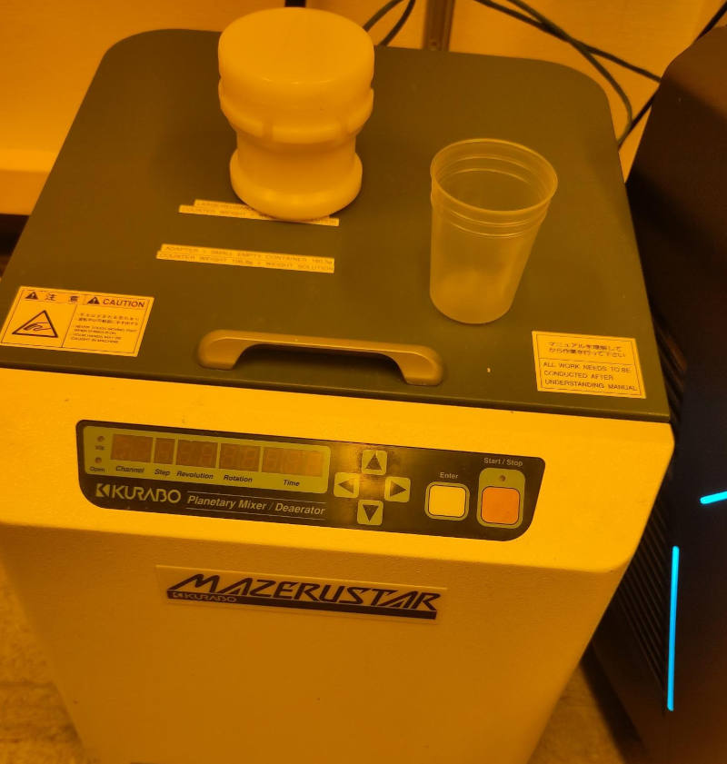
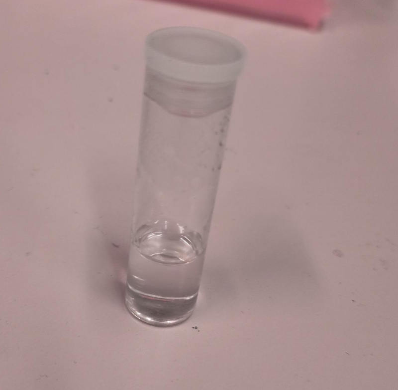
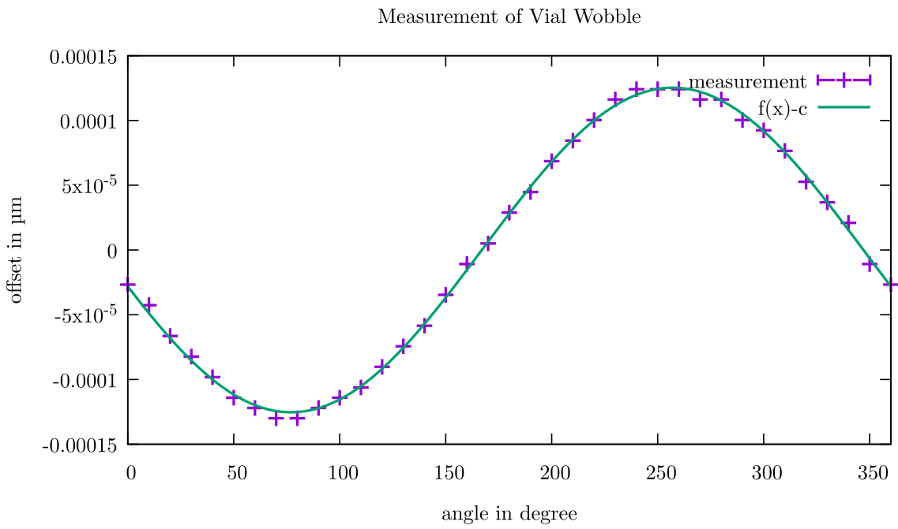

Real World Application
In this section we explain in detail how we use this toolbox to print a real boat.
Resin Preparation
For the resin we use the commercial Sartomer Arkema resin which mainly consists of Dipentaerythritol pentaaycrlate. As photo initiator we use TPO. With a refractometer we measure the refractive index $n_\text{resin} = 1.4849$. We pour the resin into a cup. The photoinitiator is mixed into Ethanol. This is shaken until the TPO is dissolved. The ethanol with the TPO is mixed into the resin. It is mixed in a Kurabo Planetary Mixer for some minutes. In total, we mix roughly $15\mathrm{mg}$ of TPO into $40\mathrm{mL}$ of the resin. With a spectrometer, we determine the absorbance at our printing wavelength $405\mathrm{nm}$ to be $A=0.2347/1\mathrm{cm}$. That means, $\mu = 23.47\mathrm{m}^{-1}$ Technically there is also absorption of the resin itself which does not contribute to the absorption but we determined it to be $A=1.92\mathrm{m}$. So we neglect this effect and assume all absorbed light is contributing to the polymerization.
Glass Vial
As glass vials we use simple cylindrical glass vial which are not quite optimized for optical applications. With a measurement calliper we determine the router radius to be $R_\text{outer} = (8.3\pm0.01)\mathrm{mm}$ and the inner radius $R_\text{outer} = (7.6\pm 0.01)\mathrm{mm}$. The refractive index is roughly $n_\text{vial}=1.47$.
DMD Characterization
We have a camera system which images the printing path at the center of the vial. After our 4f printing optical system, the DMD pixel pitch is $13.79\mathrm{\mu m}$.
Centering of DMD with respect to glass vial
Our rotation stage Zaber X-RSW60C with the drill bit holder wobbles significantly with the rotation angle. We just fit a function $f(x) = A \cdot \sin(x - o) + c$ to our measurements of the wobble. Fortunately, we just have to shift the DMD pattern for each angle by the respective amount to correct for this left-right-movement of the vial.
Selecting a Target
In this case we optimize the 3D Benchy as a printing target.
Specifying System Parameters
For the optimization we need to include all system parameters such as the refractive index of vial and resin and the geometry of the vial. Further, we need to input the size of the DMD with respect to the glass vial. If the DMD is smaller than the glass vial, we output patterns which are smaller than the simulated volume. If the DMD is larger than the glass vial, we simulate patterns which are exactly the size of the glass vial. It is your responsibility to pad the resulting images with zeros such that they fit to your setup. Without index matching bath this is important since a wrong scaling will ultimate result in a low quality print.